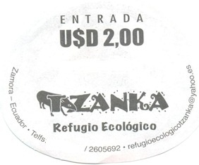

More Usful Website Links:
En el centro de la ciudad de Zamora se encuentra Tzanka refugio ecológico, un lugar paradisíaco, para los amantes de la naturaleza en donde podemos admirar varias especies de animales. Cuenta con un museo con piezas arqueológicas y una tienda artesanal, además podemos observar reliquias y antigüedades, hermosas artesanías como trajes típicos, coronas y plumas de etnias indígenas y museo arqueológico.
Tzanka
Esta palabra, que en Shuar significa "bienvenidos", es el nombre que los propietarios le dieron a este mini zoológico.
Es refugio ecológico de 100 animales de diferentes especies; hay aves, reptiles y mamíferos, entre otros. La Danta, Tapir o Gran Bestia. Este ejemplar se considera el más grande de la amazonia; es impresionante y pacifico, gran amigo del cuidado de la selva. En este lugar podemos admirar varias especies de animales como: Papagayos, pericos, comadrejas, codornices, tortugas, caimanes, iguanas, guatuzas, cuchuchos, mono araña, boa constrictor (que alcanza hasta seis metros de longitud), capibaras, puerco saíno, iguanas, pava real, águila pechi gris y otras especies.
Flora Arboles frutales como: naranjos, mandarinos, membrillos, zapotes, caimitos, guanábana, achiote y la ayahuasca. Los musgos, orquídeas y helechos tapizan los árboles y sirven de escondrijo para los insectos de los que se alimentan monos y aves.
Atractivos
En este refugio viven animales de diversas especies, aquí llegaron algunas para ser rescatadas y cuidadas, otras en cambio tienen la libertad de marcharse pero están allí porque parecen sentirse seguros. Este refugio tiene el aval del Ministerio del Ambiente.
En este refugio ecológico, Dr. Mario González y Sra. Alba Ramírez, con amor profundo hacia los animales, llevan 10 años protegiendo, cuidando, conservando y rescatando la vida de las especies sin esperar recibir algo a cambio.
Usted puede encontrar ahí especies de aves como los papagayos, pericos, garza blanca, búho, gavilán, pava de monte, pericos de cabeza roja y paujiles. En otras especies de animales existen tortugas, boas constrictor, boca arcoíris, monos machín, mono machín negros y cafés, puerco espín, armadillos…
El propietario del refugio, Mario González, dijo que ha dispuesto todo el esfuerzo para hacer de este lugar el más natural posible para que los animales se sientan en su hábitat. “Más que un zoológico, es un centro de rescate y conservación”, señaló, a la vez que indicó que en coordinación con el Ministerio del Ambiente se ha coordinado el rescate de animales.
Turistas de todo el mundo han visitado este refugio. Los visitantes han llegado desde España, Estados Unidos, Bélgica, China, Japón, Suecia, Chile, Argentina y por supuesto de todo Ecuador.
Ubicación
El refugio está ubicado en el centro de la ciudad de Zamora, en la calle José Luis Tamayo, frente al colegio San Francisco.
Finalmente, el propietario invitó a los zamoranos a ser parte de una ruta y  conocer la procedencia de cada uno de los animales.
Contacto
Dr. Mario González y Sra. Alba Ramírez
Tel. 099 675 7728, 260 5692
refugioecologicotzanka@yahoo.es